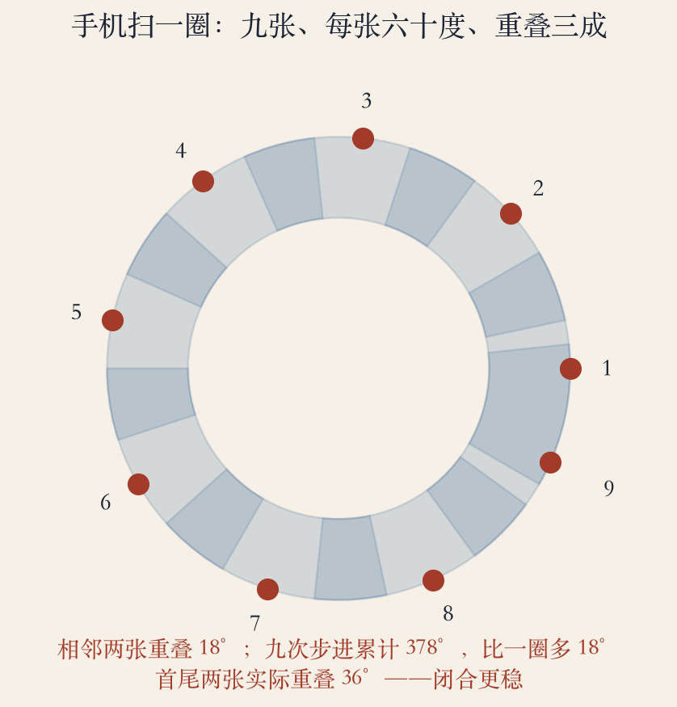
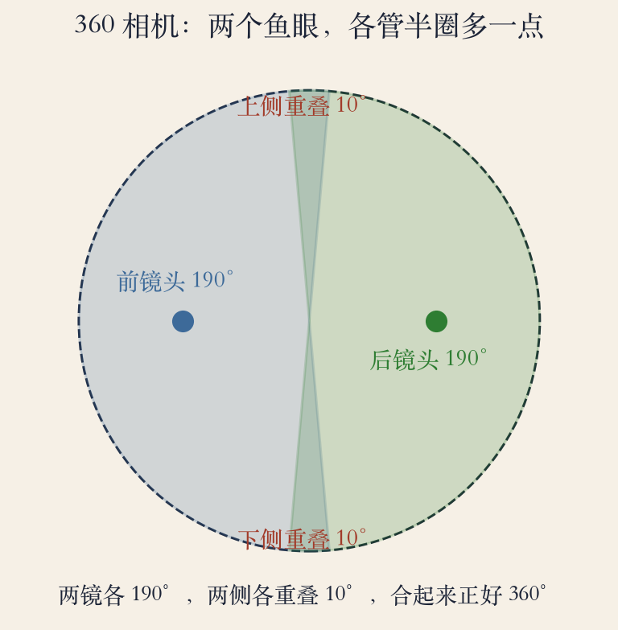
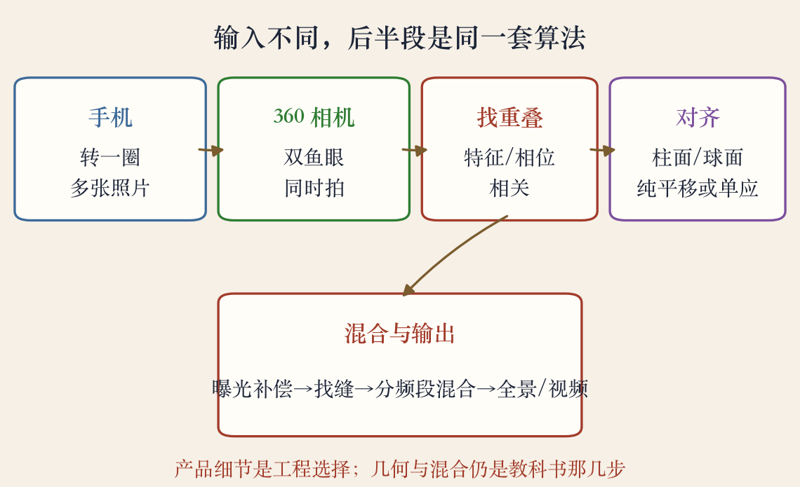

第 8 章应用复盘
手机和 360，共用一条流水线
- 手机按一下转一圈，360 举起来就拍。
- 看起来是两种产品，背后是同一套算法。
- 流程：找重叠、估对齐、选投影、混合曝光。
- 产品差在输入和工程取舍，几何没变。
依据：原书第 514 到 526 页
本集看什么
手机怎么扫圈
360 怎么覆盖
怎么用算法清单验货
手机全景
手机全景已经是标准模式
- 图像拼接已经是智能手机相机的标准模式。
- 它能拍出漂亮的超广角全景。
- 同样的算法还用来生产数字地图和卫星照片。
- 手机把参数藏起来，你只负责转。
依据：原书第 514 页
同一套几何
手机：几十张
地图：成千上万张
规模不同，步骤相同
手持拼接
手持拼接有三类麻烦
- 九十年代中期，对齐技术开始用在普通手持相机上。
- 视差和运动物体会产生鬼影。
- 曝光会变化，接缝要去掉。
- 手机一键出片，是把三类麻烦分别处理了。
依据：原书第 515 页
手机扫圈 · 程序生成示意图
张数和重叠先算清
- 视野六十度、相邻重叠三成，每一步转四十二度。
- 九次步进总转角三百七十八度，比一圈多十八度。
- 相邻两张重叠十八度，首尾实际重叠三十六度。
- 重叠太少匹配易断，太多则张数和数据量变大。
依据：本集实验

手机扫一圈：九张、每张六十度、相邻重叠三成、九次步进累计 378°｜程序生成，未用教材或论文原图
手机流水线
转头变平移，二维降一维
- 先把图投到柱面，再用纯平移对齐。
- 前提是相机保持水平，只绕竖轴转。
- 对齐后找缝、做曝光补偿、分频段混合。
- 手机还会逐张记录亮度，给补偿留线索。
依据：原书第 525 页；本集实验
双鱼眼覆盖 · 程序生成示意图
两个鱼眼，看完整圈
- 360 相机前后两个鱼眼镜头，各看一百九十度。
- 两侧各重叠十度，总共二十度，合起来三百六十度。
- 两个镜头同时拍，没有扫圈的时间差。
- 但鱼眼畸变大，展开和拼接更难。
依据：本集实验

360 相机：两个 190° 鱼眼，两侧各重叠 10°，合起来 360°｜程序生成，未用教材或论文原图
360 的难点
四个典型难点
- 鱼眼畸变，直线在边缘会弯。
- 两个镜头的曝光和色彩可能不一致。
- 缝在侧面，正好是人眼容易注意的地方。
- 镜头之间有基线，近处物体会视差。
依据：原书第 515 页；本集实验
视频全景
把一圈画面压成背景
- 摇摄视频可以压成一张背景全景，也就是视频精灵。
- 相机移动会破坏单视点假设。
- 但仍有办法做出有趣的结果。
- 360 视频也是这个思路：拼成全景，再取视角。
依据：原书第 522 到 523 页
视频多出来的问题
单视点一旦破坏
视差和鬼影就来
还要处理时间
已知角度
知道得越多，搜索越省
- 相机水平、只绕竖轴转时，柱面上只差纯水平平移。
- 专业摄影师用云台控制俯仰，在特定角度卡住。
- 已知角度能让对齐的搜索范围小很多。
- 手机用陀螺仪估转角，360 两镜头基线已知。
依据：原书第 525 到 526 页
三种已知信息
柱面：只差水平位移
云台：角度卡住
陀螺仪或基线：先验
应用流水线 · 程序生成示意图
输入不同，后半段同源
- 手机输入多张照片，360 输入两个鱼眼。
- 之后都要找重叠、估对齐、选投影、做混合。
- 前半段输入不同，后半段算法同源。
- 宣传里的黑科技，多半是在某一步做得更稳。
依据：本集实验

手机与 360 输入不同，后半段找重叠、对齐、混合同源｜程序生成，未用教材或论文原图
应用算例
张数、覆盖、数据量
- 六十度视野、三成重叠要九张；四成重叠要十张。
- 五十度视野、三成重叠要十一张。
- 双鱼眼各一百九十度、两侧各重叠十度，合起来三百六十度。
- 柱面宽约三千七百七十像素；九张原图约三百二十四兆。
依据：本集实验
九项断言全过
张数：9/10/11
覆盖：190+190−20=360
数据量：约 324 MB
失败模式
翻车先查哪一类
- 手抖或走太快，重叠不够。
- 有人走过，出现半个人影。
- 室内灯光频闪，亮度一条一条。
- 近处物体视差，接缝错位。
依据：本集实验
对症下药
重叠不够：慢一点
运动物体：避开或等一等
曝光或视差：换机位补拍
选购清单
用算法清单看产品
- 先看接缝，尤其侧面和近处。
- 再看运动物体有没有鬼影。
- 再看暗光，噪点和曝光差会放大。
- 最后看分辨率，够不够裁切。
依据：本集实验
对应三步
接缝：找缝
鬼影：分层或运动处理
暗光：曝光补偿加混合
应用复盘总结
流程没变，产品在变
- 手机扫圈，360 双鱼眼，输入不同。
- 后半段都是找重叠、对齐、投影、混合。
- 产品差异在传感器、镜头、算力和取舍。
- 把一键全景拆成可检查的步骤。
依据：原书第 514 到 526 页
两类产品
手机：一个镜头转一圈
360：两个镜头同时看
同一套几何与混合
移交 · 上机实验课
下一集回到代码
- 下一集不再讲产品，把核心三步亲手做一遍。
- 会做柱面投影、相位相关或特征对齐。
- 会做羽化或金字塔混合。
- 还会故意制造曝光差和运动物体，看接缝怎么坏。
依据：第 8 章上机实验
要做什么
柱面投影
相位相关或特征对齐
羽化或金字塔混合
第 8 章收束
四块拼成一张全景
- 对齐、拼接、投影、混合，四块拼成一张全景。
- 手机和 360 只是两种输入，算法流程相同。
- 下一集动手，把这些步骤写成代码。
- 再往后，第 9 章进入运动估计。
依据：第 8 章收束
一条线
全景：本章四块
下一集：写成代码
第 9 章：运动估计